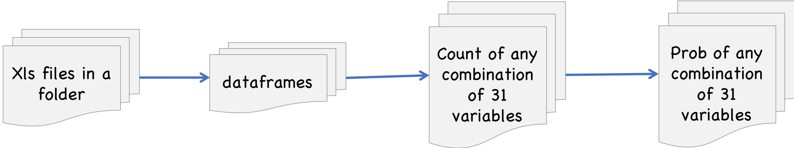
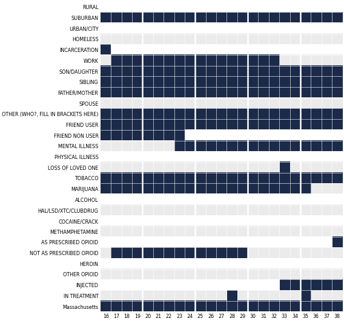
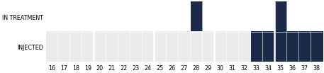
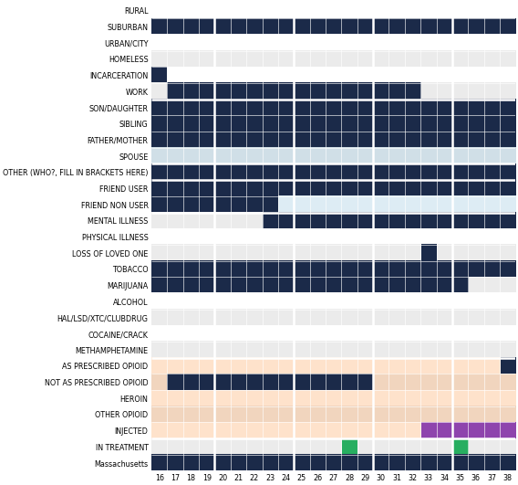
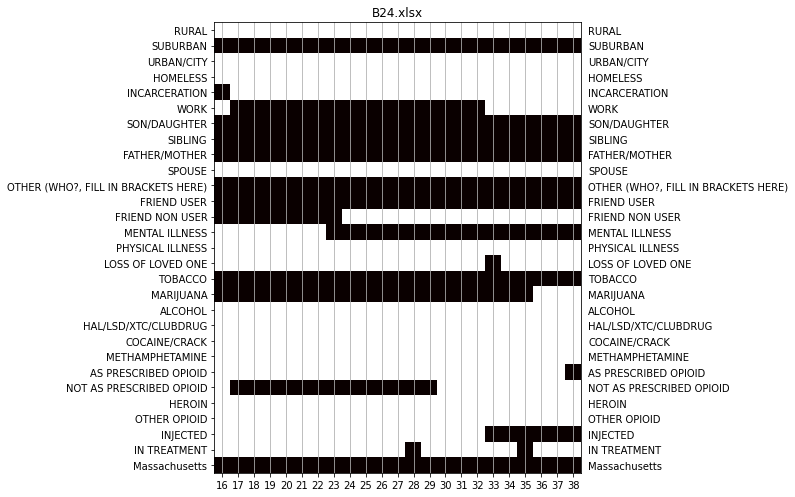

Table of contents generated with markdown-toc
Introduction¶
ODUS (for Older Drug User Study) contains data and tools to study the drug use of older drug users.
Essentially, there are these are tools:
To get prepared data on the 119 “trajectories” describing 31 variables (drug use, social, etc.) over time of 119 different respondents.
To vizualize these trajectories in various ways
To create pdfs of any selection of these trajectories and variables
To make count tables for any combinations of the variables: Essential step of any Markovian or Bayesian analysis.
To make probability (joint or conditional) tables from any combination of the variables
To operate on these count and probability tables, thus enabling inference operations
Installation¶
You need to have python 3.7+ to run this notebook.
And you’ll need to have odus, which you get by doing
pip install odus
(And if you don’t have pip then, well… how to put it… ha ha ha!)
But if you’re the type, you can also just get the source from https://github.com/thorwhalen/odus.
Oh, and pull requests etc. are welcome!
Stars, likes, references, and coffee also welcome.
A simple flowchart about the architecture:

Getting some resources¶
from matplotlib.pylab import *
from numpy import *
import seaborn as sns
import os
from py2store.stores.local_store import RelativePathFormatStore
from py2store.mixins import ReadOnlyMixin
from py2store.base import Store
from io import BytesIO
from spyn.ppi.pot import Pot, ProbPot
from collections import UserDict, Counter
import numpy as np
import pandas as pd
from ut.ml.feature_extraction.sequential_var_sets import (
PVar,
VarSet,
DfData,
VarSetFactory,
)
from IPython.display import Image
from odus.analysis_utils import *
from odus.dacc import (
DfStore,
counts_of_kps,
Dacc,
VarSetCountsStore,
mk_pvar_struct,
PotStore,
_commun_columns_of_dfs,
Struct,
mk_pvar_str_struct,
VarStr,
)
from odus.plot_utils import plot_life_course
from odus import data_dir, data_path_of
survey_dir = data_dir
data_dir
'/D/Dropbox/dev/p3/proj/odus/odus/data'
df_store = DfStore(data_dir + "/{}.xlsx")
len(df_store)
cstore = VarSetCountsStore(df_store)
v = mk_pvar_struct(df_store, only_for_cols_in_all_dfs=True)
s = mk_pvar_str_struct(v)
f, df = cstore.df_store.head()
pstore = PotStore(df_store)
Poking around¶
df_store¶
A df_store is a key-value store where the key is the xls file and the value is the prepared dataframe
len(df_store)
119
it = iter(df_store.values())
for i in range(5): # skip five first
_ = next(it)
df = next(it) # get the one I want
df.head(3)
| category | RURAL | SUBURBAN | URBAN/CITY | HOMELESS | INCARCERATION | WORK | SON/DAUGHTER | SIBLING | FATHER/MOTHER | SPOUSE | ... | METHAMPHETAMINE | AS PRESCRIBED OPIOID | NOT AS PRESCRIBED OPIOID | HEROIN | OTHER OPIOID | INJECTED | IN TREATMENT | Selects States below | Georgia | Pennsylvania |
|---|---|---|---|---|---|---|---|---|---|---|---|---|---|---|---|---|---|---|---|---|---|
| age | |||||||||||||||||||||
| 11 | 0 | 1 | 0 | 0 | 0 | 0 | 1 | 1 | 0 | 0 | ... | 0 | 0 | 0 | 0 | 0 | 0 | 0 | 1 | 1 | 0 |
| 12 | 0 | 1 | 0 | 0 | 0 | 0 | 1 | 1 | 0 | 0 | ... | 0 | 1 | 0 | 0 | 0 | 0 | 0 | 1 | 1 | 0 |
| 13 | 0 | 1 | 0 | 0 | 0 | 0 | 1 | 1 | 0 | 0 | ... | 0 | 0 | 0 | 0 | 0 | 0 | 0 | 1 | 1 | 0 |
3 rows × 31 columns
print(df.columns.values)
['RURAL' 'SUBURBAN' 'URBAN/CITY' 'HOMELESS' 'INCARCERATION' 'WORK'
'SON/DAUGHTER' 'SIBLING' 'FATHER/MOTHER' 'SPOUSE'
'OTHER (WHO?, FILL IN BRACKETS HERE)' 'FRIEND USER' 'FRIEND NON USER'
'MENTAL ILLNESS' 'PHYSICAL ILLNESS' 'LOSS OF LOVED ONE' 'TOBACCO'
'MARIJUANA' 'ALCOHOL' 'HAL/LSD/XTC/CLUBDRUG' 'COCAINE/CRACK'
'METHAMPHETAMINE' 'AS PRESCRIBED OPIOID' 'NOT AS PRESCRIBED OPIOID'
'HEROIN' 'OTHER OPIOID' 'INJECTED' 'IN TREATMENT' 'Selects States below'
'Georgia' 'Pennsylvania']
t = df[["ALCOHOL", "TOBACCO"]]
t.head(3)
| category | ALCOHOL | TOBACCO |
|---|---|---|
| age | ||
| 11 | 0 | 0 |
| 12 | 0 | 0 |
| 13 | 0 | 0 |
c = Counter()
for i, r in t.iterrows():
c.update([tuple(r.to_list())])
c
Counter({(0, 0): 6, (1, 0): 4, (1, 1): 9, (0, 1): 2})
def count_tuples(dataframe):
c = Counter()
for i, r in dataframe.iterrows():
c.update([tuple(r.to_list())])
return c
fields = ["ALCOHOL", "TOBACCO"]
# do it for every one
c = Counter()
for df in df_store.values():
c.update(count_tuples(df[fields]))
c
Counter({(0, 1): 903, (1, 1): 1343, (0, 0): 240, (1, 0): 179})
pd.Series(c)
0 1 903
1 1 1343
0 0 240
1 0 179
dtype: int64
# Powerful! You can use that with several pairs and get some nice probabilities. Look up Naive Bayes.
Viewing trajectories¶
import itertools
from functools import partial
from odus.util import write_images
from odus.plot_utils import plot_life, life_plots, write_trajectories_to_file
ihead = lambda it: itertools.islice(it, 0, 5)
Viewing a single trajectory¶
k = next(iter(df_store)) # get the first key
print(f"k: {k}") # print it
plot_life(df_store[k]) # plot the trajectory
k: surveys/B24.xlsx

plot_life(df_store[k], fields=[s.in_treatment, s.injected]) # only want two fields

Styling a trajectory¶
plot_life draws with plot_trajectory, and takes its keyword arguments. Cells are separated by small gaps, wider before every age that is a multiple of 5 (major_every), and rows alternate between white and grey so a row is easy to follow back to its variable. You can also give variables their own colors (row_colors), and lightly shade a few groups of variables (row_groups), which also puts a wider gap between groups.
from odus.plot_utils import plot_trajectory
plot_trajectory(
df_store[k],
row_groups={
"social": [
"SON/DAUGHTER",
"SIBLING",
"FATHER/MOTHER",
"SPOUSE",
"FRIEND USER",
"FRIEND NON USER",
],
"opioids": [
"AS PRESCRIBED OPIOID",
"NOT AS PRESCRIBED OPIOID",
"HEROIN",
"OTHER OPIOID",
"INJECTED",
],
},
row_colors={"HEROIN": "#c0392b", "INJECTED": "#8e44ad", "IN TREATMENT": "#27ae60"},
)

To color variables as the source spreadsheet does, read the colors from it with row_colors_of_xls(xls_filepath) and pass them as row_colors. life_plots takes the same keyword arguments, and write_trajectories_to_file takes them as plot_kwargs.
Flip over all (or some) trajectories¶
gen = life_plots(df_store)
next(gen) # launch to get the next trajectory
<matplotlib.axes._subplots.AxesSubplot at 0x12b21f070>

Get three trajectories, but only over two fields.
# fields = [s.in_treatment, s.injected]
fields = [s.physical_illness, s.as_prescribed_opioid, s.heroin, s.other_opioid]
keys = list(df_store)[:10]
# print(f"keys={keys}")
axs = [x for x in life_plots(df_store, fields, keys=keys)]
Making a pdf of trajectories¶
write_trajectories_to_file(
df_store, fields, keys, fp="three_respondents_two_fields.pdf"
)
write_trajectories_to_file(df_store, fp="all_respondents_all_fields.pdf")
Diagnosing the raw spreadsheets¶
Before preparing the data, check the raw spreadsheets for data-entry problems. print_diagnosis lists, file by file and rule by rule, the cells to check, with an explanation for each:
from odus.raw_data_diagnosis import print_diagnosis
print_diagnosis(survey_dir + "/surveys")
The possibly problematic cells for A03.xlsx:
duplicate_variable:
- B36: variable 'New Jersey' appears more than once
The possibly problematic cells for A13.xlsx:
not_binary:
- Q8 (INCARCERATION) should be 0 or 1, but is 16
...
Each check is a rule; DFLT_RULES holds the default ones:
rule |
flags |
|---|---|
|
an empty data cell that is colored |
|
a data cell with a value but no color (only on sheets that use colors) |
|
a value that isn’t 0 or 1 |
|
an age (year) that doesn’t follow the previous one |
|
an age whose |
|
a variable listed more than once |
A file that doesn’t have the expected layout is reported (rule unreadable_sheet) and the others are still checked.
Turn rules on or off, or add your own, with select_rules. A rule is a name, a function that takes a SheetView (the sheet’s values, colors and cell coordinates) and returns a boolean array marking the cells to flag, and a message:
from odus.raw_data_diagnosis import Rule, select_rules, diagnose_dir, diagnosis_table
not_too_old = Rule(
"too_old",
lambda view: view.data_mask & (view.numeric()[view.age_row] > 90),
"{coordinate} ({label}): the respondent would be over 90",
)
rules = select_rules(exclude=["filled_but_uncolored"], extra=[not_too_old])
print_diagnosis(survey_dir + "/surveys", rules=rules)
diagnosis_table(diagnose_dir(survey_dir + "/surveys", rules=rules)) # as a DataFrame
Demo s and v¶
print(list(filter(lambda x: not x.startswith("__"), dir(s))))
['alcohol', 'as_prescribed_opioid', 'cocaine_crack', 'father_mother', 'hal_lsd_xtc_clubdrug', 'heroin', 'homeless', 'in_treatment', 'incarceration', 'injected', 'loss_of_loved_one', 'marijuana', 'mental_illness', 'methamphetamine', 'not_as_prescribed_opioid', 'other_opioid', 'physical_illness', 'rural', 'sibling', 'son_daughter', 'suburban', 'tobacco', 'urban_city', 'work']
s.heroin
'HEROIN'
v.heroin
PVar('HEROIN', 0)
v.heroin - 1
PVar('HEROIN', -1)
cstore¶
# cstore[v.alcohol, v.tobacco]
cstore[v.as_prescribed_opioid - 1, v.heroin]
Counter({(0, 0): 1026, (1, 0): 264, (0, 1): 1108, (1, 1): 148})
pd.Series(cstore[v.as_prescribed_opioid - 1, v.heroin])
0 0 1026
1 0 264
0 1 1108
1 1 148
dtype: int64
cstore[v.alcohol, v.tobacco, v.heroin]
Counter({(0, 0, 1): 427,
(1, 0, 1): 656,
(1, 1, 1): 687,
(0, 0, 0): 189,
(0, 1, 1): 476,
(0, 1, 0): 51,
(1, 0, 0): 133,
(1, 1, 0): 46})
cstore[v.alcohol - 1, v.alcohol]
Counter({(0, 0): 994, (1, 1): 1375, (1, 0): 90, (0, 1): 87})
cstore[v.alcohol - 1, v.alcohol, v.tobacco]
Counter({(0, 0, 1): 807,
(1, 1, 1): 1220,
(1, 0, 0): 26,
(0, 1, 1): 76,
(0, 0, 0): 187,
(1, 1, 0): 155,
(0, 1, 0): 11,
(1, 0, 1): 64})
t = pd.Series(cstore[v.alcohol - 1, v.alcohol, v.tobacco])
t.loc[t.index]
<pandas.core.indexing._LocIndexer at 0x130955db0>
pstore¶
t = pstore[s.alcohol - 1, s.alcohol]
t
pval
ALCOHOL-1 ALCOHOL
0 0 994
1 87
1 0 90
1 1375
t.tb
| ALCOHOL-1 | ALCOHOL | pval | |
|---|---|---|---|
| 0 | 0 | 994 | |
| 0 | 1 | 87 | |
| 1 | 0 | 90 | |
| 1 | 1 | 1375 |
t / []
pval
ALCOHOL-1 ALCOHOL
0 0 0.390416
1 0.034171
1 0 0.035350
1 0.540063
t[s.alcohol - 1]
pval
ALCOHOL-1
0 1081
1 1465
t / t[s.alcohol - 1] # cond prob!
pval
ALCOHOL-1 ALCOHOL
0 0 0.919519
1 0.080481
1 0 0.061433
1 0.938567
tt = pstore[s.alcohol, s.tobacco]
tt
pval
ALCOHOL TOBACCO
0 0 240
1 903
1 0 179
1 1343
tt / tt[s.alcohol]
pval
ALCOHOL TOBACCO
0 0 0.209974
1 0.790026
1 0 0.117608
1 0.882392
tt / tt[s.tobacco]
pval
ALCOHOL TOBACCO
0 0 0.572792
1 0 0.427208
0 1 0.402048
1 1 0.597952
Scrap place¶
t = pstore[s.as_prescribed_opioid - 1, s.heroin - 1, s.heroin]
t
pval
AS PRESCRIBED OPIOID-1 HEROIN-1 HEROIN
0 0 0 927
1 172
1 0 99
1 936
1 0 0 249
1 33
1 0 15
1 115
tt = t / t[s.as_prescribed_opioid - 1, s.heroin - 1] # cond prob!
tt
pval
AS PRESCRIBED OPIOID-1 HEROIN-1 HEROIN
0 0 0 0.843494
1 0.156506
1 0 0.095652
1 0.904348
1 0 0 0.882979
1 0.117021
1 0 0.115385
1 0.884615
tt.tb
| AS PRESCRIBED OPIOID-1 | HEROIN-1 | HEROIN | pval | |
|---|---|---|---|---|
| 0 | 0 | 0 | 0.843494 | |
| 0 | 0 | 1 | 0.156506 | |
| 0 | 1 | 0 | 0.095652 | |
| 0 | 1 | 1 | 0.904348 | |
| 1 | 0 | 0 | 0.882979 | |
| 1 | 0 | 1 | 0.117021 | |
| 1 | 1 | 0 | 0.115385 | |
| 1 | 1 | 1 | 0.884615 |
AS PRESCRIBED OPIOID-1 HEROIN-1 HEROIN
0 0 0 0.843494
0 0 1 0.156506
1 0 0 0.882979
1 0 1 0.117021
0.117021 / 0.156506
0.7477093529960512
prob_of_heroin_given_presc_op = 0.359223
prob_of_heroin_given_not_presc_op = 0.519213
prob_of_heroin_given_presc_op / prob_of_heroin_given_not_presc_op
0.6918605658949217
prob_of_heroin_given_not_presc_op / prob_of_heroin_given_presc_op
1.4453779407220584
Potential Calculus Experimentations¶
# survey_dir = '/D/Dropbox/others/Miriam/python/ProcessedSurveys'
df_store = DfStore(survey_dir + "/{}.xlsx")
len(df_store)
119
cstore = VarSetCountsStore(df_store)
v = mk_pvar_struct(df_store, only_for_cols_in_all_dfs=True)
s = mk_pvar_str_struct(v)
f, df = cstore.df_store.head()
df.head(3)
| category | RURAL | SUBURBAN | URBAN/CITY | HOMELESS | INCARCERATION | WORK | SON/DAUGHTER | SIBLING | FATHER/MOTHER | SPOUSE | ... | HAL/LSD/XTC/CLUBDRUG | COCAINE/CRACK | METHAMPHETAMINE | AS PRESCRIBED OPIOID | NOT AS PRESCRIBED OPIOID | HEROIN | OTHER OPIOID | INJECTED | IN TREATMENT | Massachusetts |
|---|---|---|---|---|---|---|---|---|---|---|---|---|---|---|---|---|---|---|---|---|---|
| age | |||||||||||||||||||||
| 16 | 0 | 1 | 0 | 0 | 1 | 0 | 1 | 1 | 1 | 0 | ... | 0 | 0 | 0 | 0 | 0 | 0 | 0 | 0 | 0 | 1 |
| 17 | 0 | 1 | 0 | 0 | 0 | 1 | 1 | 1 | 1 | 0 | ... | 0 | 0 | 0 | 0 | 1 | 0 | 0 | 0 | 0 | 1 |
| 18 | 0 | 1 | 0 | 0 | 0 | 1 | 1 | 1 | 1 | 0 | ... | 0 | 0 | 0 | 0 | 1 | 0 | 0 | 0 | 0 | 1 |
3 rows × 29 columns
cstore = VarSetCountsStore(df_store)
cstore.mk_pvar_attrs()
from odus.dacc import (
DfStore,
counts_of_kps,
Dacc,
plot_life_course,
VarSetCountsStore,
mk_pvar_struct,
PotStore,
)
pstore = PotStore(df_store)
pstore.mk_pvar_attrs()
p = pstore[v.homeless - 1, v.incarceration]
p
pval
HOMELESS-1 INCARCERATION
0 0 1690
1 577
1 0 192
1 87
p / []
pval
HOMELESS-1 INCARCERATION
0 0 0.663786
1 0.226630
1 0 0.075412
1 0.034171
pstore[v.incarceration]
pval
INCARCERATION
0 1989
1 676
pstore[v.alcohol - 1, v.loss_of_loved_one]
pval
ALCOHOL-1 LOSS OF LOVED ONE
0 0 990
1 91
1 0 1321
1 144
tw = pstore[v.tobacco, v.work]
mw = pstore[v.marijuana, v.work]
aw = pstore[v.alcohol, v.work]
w = pstore[v.work]
evid_t = Pot.from_hard_evidence(**{s.tobacco: 1})
evid_m = Pot.from_hard_evidence(**{s.marijuana: 1})
evid_a = Pot.from_hard_evidence(**{s.alcohol: 1})
evid_a
pval
ALCOHOL
1 1
aw
pval
ALCOHOL WORK
0 0 431
1 712
1 0 448
1 1074
w / []
pval
WORK
0 0.329831
1 0.670169
(evid_m * mw) / []
pval
MARIJUANA WORK
1 0 0.350603
1 0.649397
(evid_t * tw) / []
pval
TOBACCO WORK
1 0 0.313001
1 0.686999
(evid_a * aw) / []
pval
ALCOHOL WORK
1 0 0.29435
1 0.70565
Extra scrap¶
# from graphviz import Digraph
# Digraph(body="""
# raw -> data -> count -> prob
# raw [label="excel files (one per respondent)" shape=folder]
# data [label="dataframes" shape=folder]
# count [label="counts for any combinations of the variables in the data" shape=box3d]
# prob [label="probabilities for any combinations of the variables in the data" shape=box3d]
# """.split('\n'))
Acknowledgements¶
This study was supported by the National Institutes of Drug Abuse R15DA041657 and R21DA025298, and . The content is solely the responsibility of the authors and does not necessarily represent the official views of the National Institute on Drug Abuse or the National Institutes of Health.
Here are the grant numbers you worked on I think there are only two plus the one you got as PI from NAHDAP
National Institutes of Health, National Institute on Drug Abuse¶
2017-2020
1 R15 DA041657
Miriam Boeri, Aukje Lamonica, MPIs
Award: $341,565
“Suburban Opioid Study” (SOS)
National Institutes of Health, National Institute on Drug Abuse, American Recovery and Reinvestment Act¶
2009-2011
R21DA025298
Miriam Boeri, PI
Thor Whalen, Co-investigator
Award: $367,820
“Older Drug Users: A Life Course Study of Turning Points in Drug Use and Injection.”
National Addiction & HIV Data Archive Program (NAHDAP)¶
2010-2011
University of Michigan’s Inter-university Consortium for Political and Social
Research (ICPSR)
Thor Whalen, PI
Data archived at http://dx.doi.org/10.3886/ICPSR34296.v1
This documentation as a single file: odus.md (Markdown, for agents).
built 2026-10-19 11:12 UTC from 96daf5c (master) · odus 0.0.11 · about this build